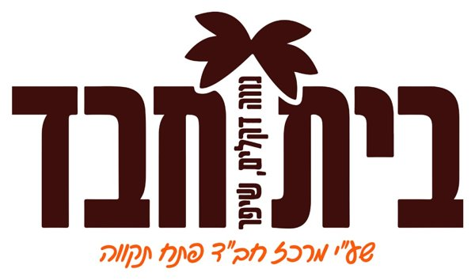
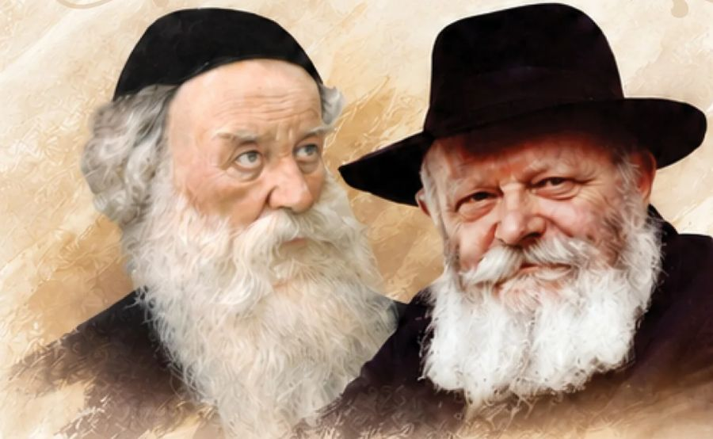

״מי שישמח בשמחתי, אוציאנו מן המיצר אל המרחב״
(אדמו״ר הזקן)
חג הגאולה
י״ט כסלו
בשיפר-נוה דקלים
עלות ההתוועדות לכבוד בעל התניא: כ-₪10,000
כל תרומה מקרבת אותנו להצלחת הערב

יום שחרורו ממאסר של רבי שניאור זלמן מליאדי,
בעל התניא והשולחן ערוך
תושבי השכונה מוזמנים לערב מרגש
יום ראשון · י״ט כסלו (29.11)
בשעה 20:00
באולם מתנ״ס נפלאות, רח׳ פינטו 9
לתרומה והקדשה באירוע ← ניווט עם Wazeניסים מהמערכה, וסיפור הדפסת התניא בלב עזה
עם הרב אריה עמית, רב ולוחם
מפקד מחנה פגה (במיל׳)
עזרו לנו להפיק ערב מכובד ושמח לכל תושבי השכונה. בחרו סכום:
לתרומה מאובטחת באשראילהקדשה באירוע ולפרטים: הרב לוי דורון, 058-4032770